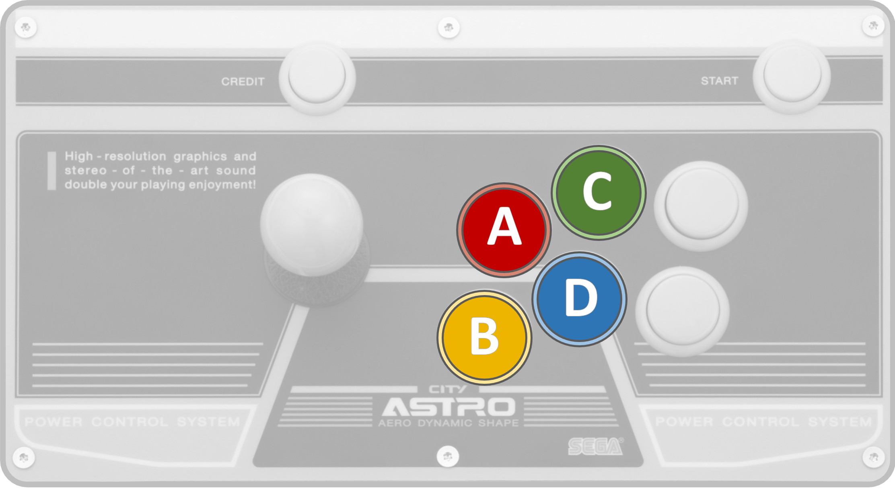

How to play
Button layout
This layout is the default and most commonly used, enabling easy execution of multiple button combinations.
Throw
 or
or
 +
+Throws beats meaty normals. Some characters have additional throws inputs or air throws.
Supers
When a stock is full, players can use a Super Combo. The Super Gauge holds up to 3 stocks.
Build super meter by performing normals, specials, dashes, or taunts, and by getting hit or blocking. You gain more meter from hits or blocks than from whiffs.
Tech rolling
ex:
 +
+ +
+Tech roll give you more options to escape from your opponent's pressure after a knockdown. It only works after after a non-super hit. Tech rolls can also be delayed
Dashes
orBackdashes and dashes fill your meter. All characters can dash except Condor. Some backdashes have invincibility. Some characters can also perform short dashes by canceling with normals or jumps for varied jump lengths.
Dizzy
You can be dizzied after repeated hits. If you rapidly mash directions and buttons, you will skip the dizzy state and begin recovering immediately. Your character will be invulnerable for a few frames during the recovery animation.
Chip damage
Chip damage is the damage taken while blocking an attack. It can secure a win if your opponent's health is low enough. Note that super moves cause minimal chip damage, so special moves are more effective for finishing off your opponent.
Breakers
Green circle under Rila indicates a successful Breaker, as with wakeup reversals.
A Breaker is a defensive mechanic that allows you to escape while being hit by specific combos. Depending on the character, this can be achieved using certain specials, normals, backdashes, throws, or supers.
Master unbreakable combos for guaranteed damage and practice recognizing breakable combos from your
opponent. This mechanic can be used as mind games
(ex: bait defenders into reversals)
Risk system
The Risk System increases the damage of your next attack over time when you are not attacking or
defending.
The damage cap is different for each character.
Once the damage cap is reached (around 30 sec in-game) your next hit will likely be about double.
The winner of a round has less damage resistance in the next round, while the loser has slightly
increased defense.
When there is a significant difference in health, the player with less health is immune to damage mod
until both players have similar health.